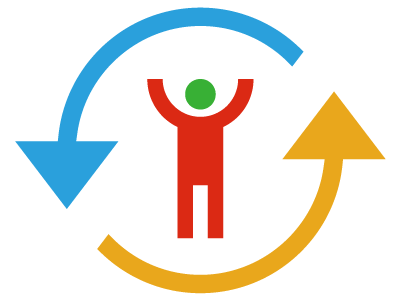

大约四十亿年后银河系有可能与仙女星系相撞，届时人类生存的宇宙天体也许会彻底无法生存，人类需要在四十亿年内逃出星系或找到新栖息地。
众所周知，星系的尺度极大，完成这一目标需要提前很久发展逆天科技和积累巨量资源。
从今天开始，银河-仙女星系对撞事件人类求生工程正式启动。

同时，“左右逢源”基金会也已经成立，请关心宇宙大事和人类终极命运的有识之士积极打钱，所得款项将用于生成和运营“绝境逢生”加密货币，为子孙后代争取更多生存机会。
我们也可以考虑纳入一些目光短浅的小项目，作为子项目做整体统筹规划，首先请这些小项目上缴筹措的项目资金，方便统一管理。
40亿年听上去漫长，实际上时间和资源非常紧张，后续会从自愿捐款转为强制贡献，请大家从全人类大局出发服从统一指挥，不要不识抬举。
预计五年内将成立专门组织，负责督促全人类勒紧裤腰带集中力量搞四十亿年工程，监督并制止一切浪费资源的消费活动，如有反抗或暗中违反，将视为人奸当场击毙。
今天的项目进度是6.84931e-13。
如果你没有觉察到有任何进展，实属正常，毕竟是人类历史上最宏大的工程，一朝一夕之功难以体现。
但不要紧，只要所有人都坚定信念，相信项目必将成功，不要阴阳怪气说任何风凉话，持续为项目做出贡献——比如默默打钱，你必将成为人类的救世主。